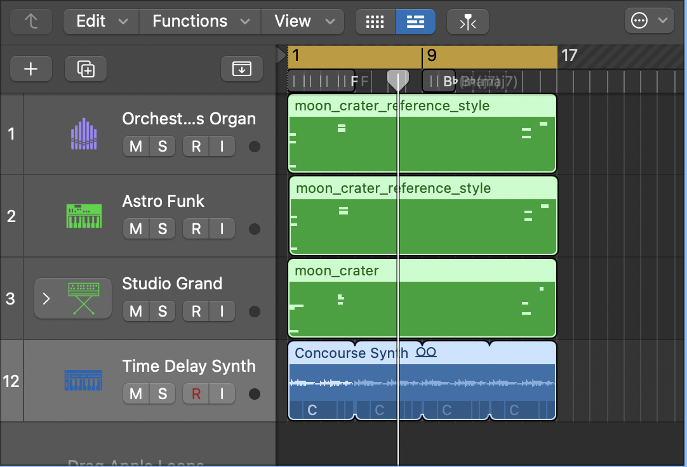
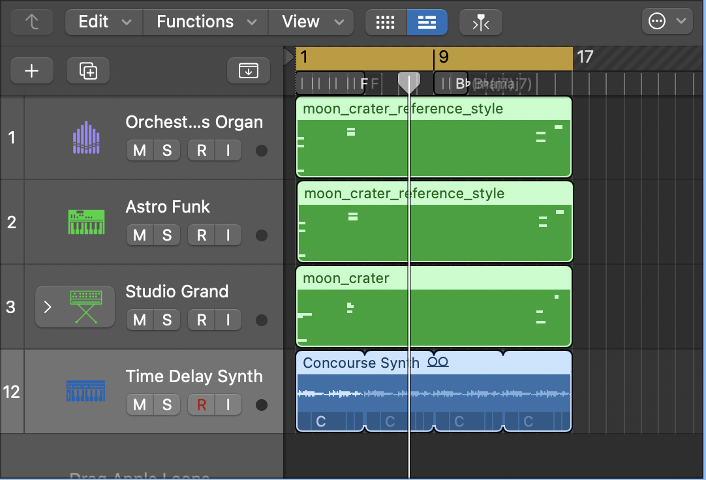

Open Space Data Sonification
Translating between space, visual and sounds
Moon Crater Visualization and Sonification
Click the moon to start the sonification
Interactive visualization with sonified crater impacts. Each falling star represents a crater from the dataset, sized by diameter. Larger craters produce deeper, longer tones; smaller craters create higher, shorter sounds.
Guiding Question
How can sonification enhance perception of scientific data and phenomena?
Context
Independent project exploring science-art overlap, inspired by Matt Russo's sonification work and using NASA's open moon crater datasets.
Date: January 2026
Tools: Python (Jupyter Notebook), numpy, pandas, matplotlib, midiutil, Logic Pro, AI (Grok, Claude)
Resources: Matt Russo (sonification methodology), NASA open datasets, open-source moon imagery
Approach: The visualization balances scientific accuracy (using real NASA crater coordinates, sizes, and measurements) with poetic abstraction (musical interpretation, contemplative aesthetic), linking astronomy to art and music through data sonification.
Data
Working with NASA moon crater dataset containing 9 craters with measured parameters (subset selected from larger NASA database):
- Names: Tycho, Copernicus, Kepler, Aristarchus, Plato, Eratosthenes, Archimedes, Aristoteles, Autolycus
- Spatial data: Latitude, longitude coordinates
- Physical measurements: Diameter (32-101 km), depth (1.0-4.7 km)
- Temporal data: Age (108-3800 million years), time since impact event 0
- Sonification parameters: Pitch frequencies (110-330 Hz), volume (56-100), duration (1.5-4.0 seconds)
The dataset reveals patterns in crater formation over billions of years, with larger, older craters from periods of heavy bombardment.
Parameter Mapping:
- Diameter → Pitch frequency (larger craters = lower/deeper tones, smaller craters = higher/brighter tones)
- Diameter → Duration (larger craters = longer sustained tones ~4s, smaller craters = shorter tones ~2s)
- Latitude/Longitude → Impact position on moon surface
- Diameter → Visual crater size on canvas
- Volume → Sound loudness (proportional to crater magnitude)
Audio Production
Logic Pro composition (OpenSpaceAudio.mp3) — More cinematic, atmospheric:
- Orchestral Organ: Deep, sustained tones for large ancient craters
- Astro Funk: Rhythmic elements tracking impact timing
- Studio Grand: Clear melodic voices for mid-sized formations
- Time Delay Synth: Atmospheric reverb creating spatial depth
Instruments and sync provided by Logic Pro for rich, layered soundscape. Exported as MP3 for web delivery. Interesting as audio-only experience.
Audio-only experience: Listen to the OpenSpace composition
Audio with minimal animation: Click to play/pause with visual feedback
Visual Production
AI-generated animation — Calm, contemplative aesthetic:
- Moon visualization with falling star impacts
- Crater formation synchronized to data parameters
- Open-source moon imagery as reference
- Refined through iterative AI prompting (Claude, Grok)
- Data mapping: diameter → crater size & pitch frequency, latitude/longitude → impact position, diameter → tone duration
AI vs Human mapping decisions:
- AI initial approach: Larger craters → higher pitch (treating size as brightness/energy)
- Human adjustment: Inverted to larger craters → lower/deeper pitch (matching physical intuition: bigger impacts = deeper sounds)
- AI provided: Basic duration from depth parameter
- Human refined: Duration based on crater diameter (larger = longer sustain ~4s, smaller = shorter ~2s)
- AI generated: Sharp sound envelopes with abrupt endings
- Human refined: Smooth attack/sustain/release curves with extended fade-out for peaceful, contemplative atmosphere
Interesting as combined image + audio experience with visual emphasis.
Data Analysis
Crater diameter vs age: Larger craters tend to be older, formed during periods of heavy bombardment.
Crater diameter vs time since impact: Distribution shows bombardment patterns over lunar history.
Process

 

Python workflow: Environment setup with libraries; data cleaning from NASA portal; selection of 9 representative craters; parameter mapping to musical elements; MIDI generation in Jupyter Notebook.
Logic Pro workflow: MIDI import; instrument selection (Orchestral Organ, Astro Funk, Studio Grand, Time Delay Synth); mixing and effects; MP3 export as OpenSpaceAudio.mp3.
Visual workflow: AI-generated canvas animation using JavaScript; data mapping implementation; synchronization of impacts with real-time synthesized audio (Web Audio API).
AI vs Human contributions:
- AI handled well: Code structure, canvas setup, basic animations, mathematical conversions (lat/lon to x/y), data loops
- Human adjustments needed: Sonification mapping logic (inverting pitch scale so larger = deeper), duration calculations based on crater size, audio envelope smoothness (attack/sustain/release curves), aesthetic choices (timbre, fade timing, visual-audio synchronization)
- Iterative process: AI provided functional code foundation, human refined perceptual and artistic parameters through multiple iterations to achieve balance between scientific accuracy and poetic expression
Approach
- Inspired by Matt Russo's sonification methodology
- NASA open datasets: 9 moon craters selected for complete parameter sets and geographic distribution
- Hybrid workflow: Python/Jupyter for data processing and MIDI generation, AI (Claude, Grok) for interactive web visualization code structure and refinement
- Manual design: Logic Pro instrument selection and mixing for cinematic audio composition
- Two output modes: Audio-only (cinematic/atmospheric with Logic Pro instruments) vs. Audio+Visual (calm/contemplative with real-time synthesized tones)
- Balance between scientific accuracy (real NASA data, accurate positioning) and artistic expression (musical interpretation, contemplative pacing, poetic abstraction)
- Direct parameter mapping: diameter → pitch frequency (inverted for physical intuition) + duration (size-based sustain), latitude/longitude → visual position, volume → loudness
Results
Improved data accessibility through acoustic and visual representation.